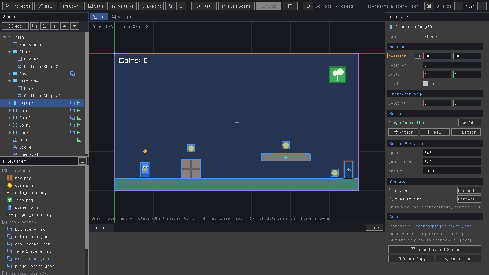
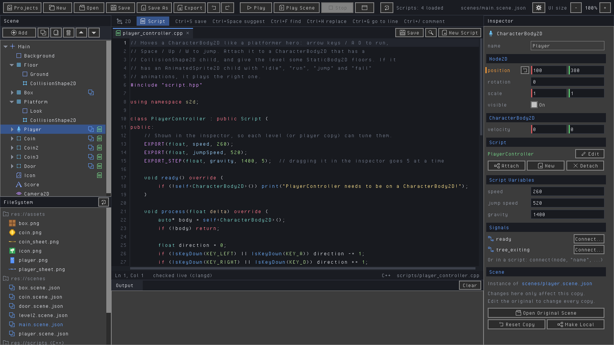
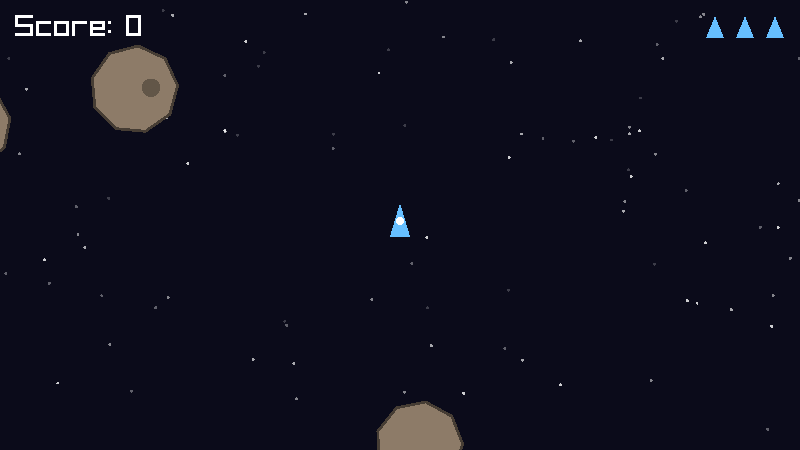
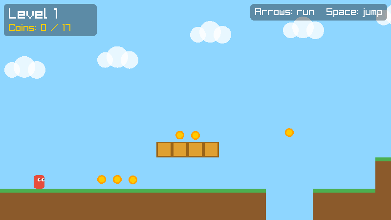
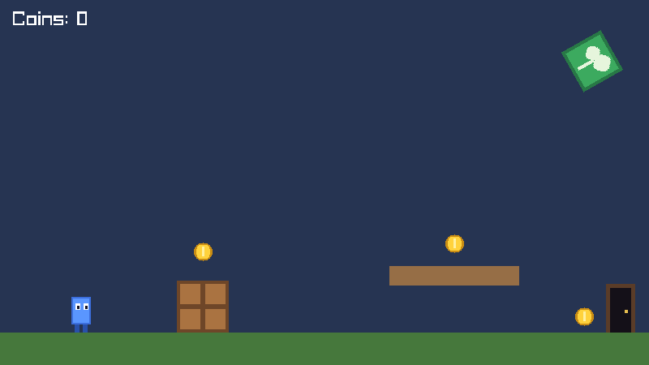

Nodes and scenes
Sprites, animated sprites, labels, cameras, bodies that collide and areas that notice: Godot-style nodes you build levels from. Put scenes inside scenes to reuse the player in every level.
Free and open source · MIT licensed
Sprout is a friendly game editor and engine built on raylib. Place nodes with the mouse like in Godot, write C++ scripts that reload while the game runs, and export to Windows, macOS, Linux and the web with one button.

No engine license, no account, nothing to install beyond a C++ compiler and CMake.
Sprites, animated sprites, labels, cameras, bodies that collide and areas that notice: Godot-style nodes you build levels from. Put scenes inside scenes to reuse the player in every level.
Attach a C++ script to a node and save: it compiles in the background and the running game
picks up the change. EXPORT variables show up in the Inspector.
Autocomplete, errors underlined as you type, brackets that close themselves, and warnings for mistakes that compile but don't work. Or use VS Code, Visual Studio or CLion.
Like Godot's: the body entered, the timer ran out. Connect them in the Inspector (the editor writes the function for you) or in code.
Host or join, synced nodes, RPCs, dedicated servers, and the hard parts done for you: smooth movement, client-side prediction and lag compensation.
Windows (x64 and ARM64), macOS (universal), Linux and the web, each with one click. Exported games run on their own, ready for itch.io.
Waves, flashes, outlines: write a fragment() shader like in Godot, tweak its
parameters in the Inspector, and watch it change as you save.
Paint levels from a tile sheet, mark the solid tiles, and drop in maps made in Tiled: every layer and object comes across.
Buttons, panels, sliders, health bars and text boxes, with a CanvasLayer that keeps
the HUD on screen while the camera follows the player.
Game-wide scripts that survive scene changes: the score, the inventory, music, saving.
Reach them from any script with autoload<GameState>(...).
Step-by-step tutorials, a manual written for beginners, commented examples, and friendly messages instead of crashes.
Sprout comes in two separate parts. Use whichever suits the way you like to work.

A visual editor, like a small Godot. Build levels with the mouse, attach C++ scripts, press Play. Hot reloading, signals, multiplayer and exports included.
class Hero : public Script {
public:
EXPORT(float, speed, 250); // tune it in the Inspector
void process(float delta) override {
auto* body = self<CharacterBody2D>();
body->velocity.x = 0;
if (IsKeyDown(KEY_LEFT)) body->velocity.x = -speed;
if (IsKeyDown(KEY_RIGHT)) body->velocity.x = speed;
body->moveAndSlide();
}
};
REGISTER_SCRIPT(Hero)

A code-only game library: a game is one C++ file with update() and draw().
Great for learning how games work from the ground up.
struct Hello : Scene {
Vec2 player{400, 225};
void update(float dt) override {
player += getVector("left", "right", "up", "down") * 300 * dt;
}
void draw() override { drawCircle(player, 30, Color::Gold); }
};
int main() {
Game game("Hello, Sprout!", 800, 450);
game.run<Hello>();
}Not sure which? Start with the engine tutorial: everything you learn there carries straight over to the editor.
Sprout builds from source in a few minutes. CMake downloads every library for you.
A C++ compiler, CMake 3.25+ and Git. On Windows that's Visual Studio with "Desktop development with C++". The installation guide walks you through it for Windows, macOS and Linux.
git clone https://github.com/MrJkl561/SproutEngine.git
cd SproutEngine
scripts\run-editor.batgit clone https://github.com/MrJkl561/SproutEngine.git
cd SproutEngine
scripts/run-editor.shThe first build takes a few minutes. The editor opens with a demo platformer: press Play (F5).
Follow Your first game in the editor (about 15 minutes), or Your first game with the engine.

Written for beginners, all of it free on GitHub.